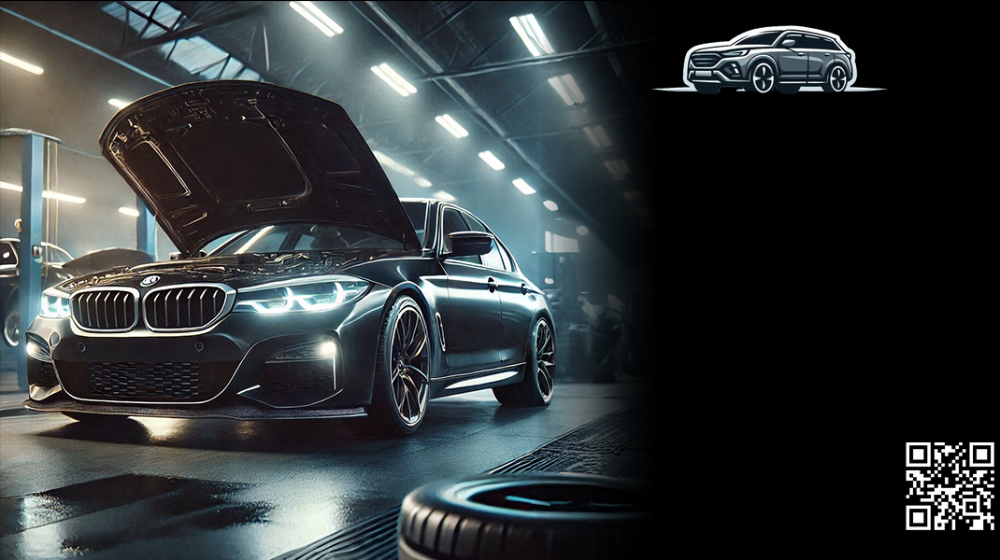

Spolehlivý a moderní autoservis s profesionálním přístupem. Opravujeme, kontrolujeme, pečujeme!
Naše Služby
Servis vozidel - Údržba a opravy všech značek.
Příprava na STK - Kontrola a opravy.
Moderní diagnostika - Nejnovější technologie.
Ceník Služeb
Servisní práce 600 Kč/hod
Příprava na STK 1 500 Kč
Diagnostika motoru 800 Kč
Co říkají naši zákazníci?
"Skvělý servis, rychlá oprava!" - Petr Novák
"Důvěřuji Auto Lauko už léta!" - Jana Dvořáková